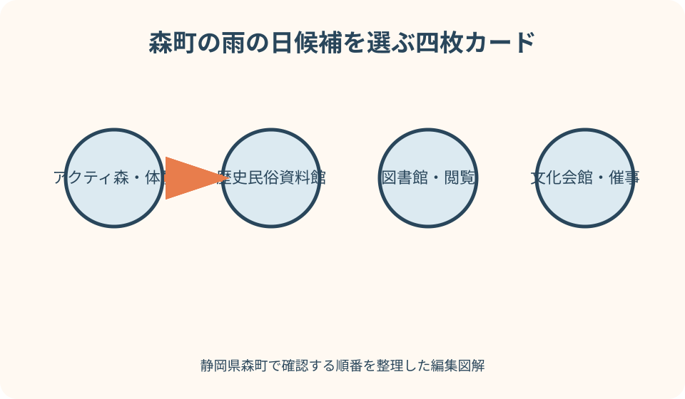
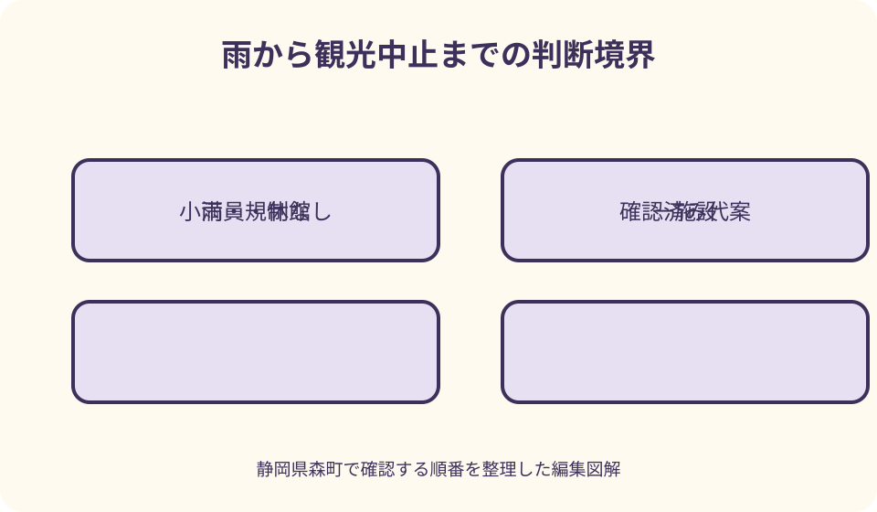

雨の日・屋内観光｜最終確認 2026-08-10
静岡県森町の雨の日観光｜陶芸・資料館・図書館を無理なく巡る
静岡県森町で雨の日を過ごすなら、アクティ森の創作体験、森町立歴史民俗資料館、森町立図書館、文化会館の催事などが候補になります。ただし、建物があることと、観光客が当日予約なしで利用できることは別です。文化会館の貸室は申請が必要で、図書館は閲覧と館外貸出の条件が異なり、資料館には休館日があります。陶芸等も受付・定員・完成品受取を運営者へ確認します。雨が警報や道路規制を伴う場合は、屋内候補へ向かうのではなく観光を中止します。

編集イラスト雨の日は『屋内一施設』から決める
森町は町なかとアクティ森のある山側で移動時間と道路条件が変わります。雨天日に屋内候補を三、四か所つなげず、最初に一方面を選びます。
町なかなら歴史民俗資料館、図書館、文化会館の当日催事を比較します。互いに近くても、開館日、入れる区画、滞在の目的は別です。
山側ならアクティ森の創作体験を中心にし、予約・受付・完成品の受取や発送を確認します。空いた時間を川辺や林道で埋めません。
屋内候補とは、雨に濡れない建物という意味ではなく、その日に一般客が利用でき、入口までの移動と帰路を確認できた場所です。
一施設が休館・満員なら、第二候補へ自動で移動するのではなく、第二候補も当日確認できた場合だけ変更します。確認できなければ帰ります。
最初に雨と防災情報を分ける
雨の日観光を考える前に、気象庁の森町予報、警報・注意報、雨雲、森町公式の防災情報を開きます。傘で対応できる雨かを自分の印象だけで決めません。
大雨・洪水・雷等の警報、町の避難情報、道路規制、施設の臨時休業があれば、屋内へ避難する観光計画に切り替えず、出発を中止します。
予約済みの場合は、行けない旨とキャンセル・変更条件を施設へ連絡します。支払済みであることを移動継続の理由にしません。
現地で雨が強まった場合、次の施設へ車で移動して時間を使うのではなく、現在いる管理施設の案内と町の発表を確認します。
警報が解除されても、冠水、土砂、倒木、鉄道の乱れが残る場合があります。解除時刻を観光再開の合図として扱いません。
アクティ森の陶芸・創作体験を確認
アクティ森は陶芸、和紙、草木染め等の創作体験を案内してきた複合施設です。リニューアル後の実施内容は現在の運営者公式で確認します。
陶芸は、手ひねり・ろくろ等の種類、対象年齢、予約、定員、開始時刻、所要、汚れてよい服装を問い合わせます。雨の日に枠が空くとは限りません。
作品は当日持ち帰れるのか、焼成後の受取・発送があるのか、追加費用や期間を確認します。体験時間だけで旅行を完結させません。
同じ施設内でも、体験工房、販売所、飲食、MTB等は受付と営業が異なります。陶芸を予約できたから全施設を使えるとは考えません。
子どもと参加する場合は、保護者同伴、年齢、作業台、着替え、ベビーカー、途中退出について運営者へ聞きます。年齢だけで完成を期待しません。

歴史民俗資料館は建物条件も含める
森町立歴史民俗資料館は旧郡役所を移築した建物で、農耕具、生活用品、古文書等を紹介します。町公式で開館・休館・臨時情報を確認します。
公式案内には二階展示室が示されています。階段、ベビーカー、車いす、傘置き、撮影、トイレなど必要な条件は事前に資料館へ問い合わせます。
無料と案内されていても、団体、解説、特別行事、貸切の扱いが同じとは限りません。当日に一般見学できるかを確認します。
歴史建築は現代の大型施設と床・入口のつくりが異なる場合があります。濡れた靴や傘で展示と建物を傷めないよう職員の案内に従います。
資料館を見た後に周辺史跡を雨の中で歩くことをセットにしません。見学だけで戻る計画なら、路面悪化や傘で視界が狭い時間を減らせます。
図書館は閲覧と貸出を分ける
森町立図書館はどなたでも利用できると町公式にありますが、館外貸出は原則として町内在住・在勤・在学者です。閲覧と借出しを混同しません。
開館時間、月曜等の休館、特別整理日を当日確認します。通常の曜日表だけで、臨時休館や開館時間変更がないと決めません。
雨の日の待合所や子どもの遊び場として長時間占有するのではなく、本を読む場所として館内ルール、静けさ、座席利用に配慮します。
児童図書コーナーを利用する場合も、読み聞かせ行事、席、ベビーカー、飲食、荷物、トイレについて必要な点を図書館へ尋ねます。
図書館は文化会館と同じ所在地にありますが、開館、問い合わせ、利用規則は別です。文化会館が開いていることを図書館の開館確認に使いません。
文化会館は催事・ロビー・貸室を分ける
森町文化会館にはホール、展示ギャラリー、研修室、美術工芸室、和室、図書館等がありますが、すべてが観光客へ自由開放されるわけではありません。
公演・展示を見たい場合は、当日のイベント、チケット、開場、満席、年齢条件を主催者公式で確認します。建物の開館時刻だけでは入場できません。
貸室を使うには申請や使用料があり、空室だから雨宿りに自由利用できるものではありません。予約状況と一般利用可能区画を会館へ聞きます。
ロビーのストリートピアノも、貸館状況等で使えない場合があると公式案内にあります。来館目的をピアノ一つに固定しません。
イベントのない日に建物見学だけできるか、休憩場所が使えるかは当日確認します。文化会館を常設の無料観光施設として紹介しません。

車は駐車場から入口まで設計する
車移動では施設駐車場の有無だけでなく、入口までの距離、屋根、段差、水たまり、傘を開く場所、子どもの乗降位置を確認します。
雨で混雑しても、玄関前や車寄せに長時間停めません。運転者以外を降ろす場合は、施設が認める場所と誘導に従います。
山側へ向かう場合は、県道・町道・林道の規制と雨雲を確認します。目的地が営業中でも、往復道路が確認できなければ向かいません。
冠水した道路、落石表示、見通しの悪い山道を、屋内予約へ間に合わせるため進みません。地図アプリが示す細道へ迂回する案も外します。
傘、濡れた上着、泥の付いた靴を車内へ収める袋やタオルを用意します。床を汚さないことより、駐車場内で慌てず乗降することを優先します。
公共交通は帰りの便から確認
天浜線で来る場合は、往路より先に帰りの遠州森駅発を公式時刻表で確認します。雨による運休・遅延情報は出発直前にも見ます。
資料館・図書館・文化会館へ駅から歩くなら、距離だけでなく歩道、交差点、屋根のない区間、傘で狭くなる視界を地図で確認します。
アクティ森など山側へは、町営バス、路線バス、予約便、タクシーを混同しません。対象者、予約期限、運休日、乗降場所を各公式へ戻って確認します。
体験終了時刻と帰り便の間が短い場合は、制作を急ぐのではなく別の時間帯・日へ変更します。施設の遅れを交通が待つとは限りません。
運休時にタクシーがすぐ来ると仮定せず、事前連絡の要否と自分の利用条件を確認します。代替がなければ公共交通での訪問を延期します。
バス停で待つ計画には、屋根、待合場所、乗車方法、濡れた傘の扱いも加えます。屋根があるように見える地図記号や古い写真を根拠にせず、必要なら町または交通事業者へ確認します。
帰りの列車やバスまで長い空白がある場合、駅や施設の営業時間外まで待てるとは限りません。最終便ではなく、施設閉館より前に駅へ戻れる便を第一候補にします。
傘と濡れた路面を施設間移動に入れる
傘を差すと視野が狭くなり、車の音や自転車に気づきにくくなります。町なかの短い距離でも、写真や地図を見ながら歩きません。
石段、金属の側溝蓋、白線、落葉、木床、資料館の入口は濡れると条件が変わります。滑りにくい履き慣れた靴を選びます。
長い傘は展示物や他客へ触れやすいため、傘袋・指定置場を使います。濡れた折畳み傘を開いたまま館内へ持込みません。
子どもが傘を持つ場合は、列で歩ける広さと手をつなげる状況かを見ます。狭い歩道なら見どころを増やさず、車または一施設で完結します。
雨の町並み撮影を目的に道路端で立止まらず、管理者が認める屋内・軒下から撮れる範囲に留めます。私有の軒先を雨宿りに使いません。
子連れは待ち時間を先に減らす
子連れでは、予約時刻前に長く並ぶ体験より、受付が明確で途中退出を相談できる一施設を選びます。雨で屋内が混む前提を置きます。
陶芸等では、対象年齢、保護者の補助、汚れ、着替え、制作物、トイレを確認します。子ども向けという紹介だけで全員が同じ作業をできるとは限りません。
資料館では古い建物と展示に触れないこと、図書館では声と走行、文化会館では催事の年齢条件を、出発前に子どもへ短く説明します。
ベビーカーが使えるか、階段でどうするか、授乳・おむつ替え設備があるかは施設へ問い合わせます。公式写真から設備を推測しません。
疲れや飽きが出たら二施設目を外します。雨だから屋内で時間を使い切るのではなく、帰路が混む前に帰ることを一日の成功条件にします。
子どもの濡れた服や靴を替える場所が施設内にあるとは限りません。車内や指定された場所で着替えられる準備をし、展示室や図書館の閲覧席を更衣場所として使いません。
満員・休館の三段階代案
第一代案は、同じ方面で当日開館と一般利用を確認済みの施設一つです。アクティ森満員なら、無確認で町なかへ急行する方法ではありません。
第二代案は、遠州森駅周辺で営業確認した店のテイクアウトや、図書館の短時間閲覧など、予約不要を公式確認できた小さな利用です。
第三代案は帰宅です。雨天の休館を埋めるため、小國神社の川沿い、町民の森、ダム、花の寺へ行先を屋外へ変えません。
月曜・火曜、特別整理日、貸切、公演満席、体験枠満了は施設ごとに異なります。『どこかは開いている』という期待を旅程にしません。
代案にも駐車、公共交通、入場条件があります。主候補と同じ確認票を使い、情報が一項目でも欠ければ選びません。
半日モデルは町なかかアクティ森の二択
町なか型は、資料館または図書館を主目的にし、当日催事が確認できた場合だけ文化会館を加えます。すべてを常設展示のように回りません。
アクティ森型は、予約済みの創作体験と、営業確認した館内飲食・物販の範囲で完結します。川、キャンプ場、山道は雨の日の追加先にしません。
どちらも昼食を必須の店内利用にせず、満席時のテイクアウト、時間変更、持参可能な場所の確認をしておきます。
朝の時点で雨雲、警報、交通、施設を確認し、出発後に条件が変われば主目的一つも取りやめます。モデルコースは実行義務ではありません。
午後早めに帰路へ入り、暗さと雨が重なる前に駅・幹線道路へ戻ります。閉館時刻ぎりぎりまで滞在する計画は避けます。
良い点
森町には、創作体験、歴史資料、読書、公演・展示という性格の異なる屋内候補があり、雨の強さと同行者に応じて目的を一つ選べます。
資料館と図書館は町公式に開館・休館・問い合わせが明記され、訪問前に当日の利用可否を確認する基礎が整っています。
文化会館は催事、施設紹介、予約状況、利用案内が分かれているため、観客として入る場合と貸室利用の違いを確認できます。
森町公式の防災ページから雨雲、警報、河川、道路規制へ進めるため、屋内施設の営業情報と移動条件を別々に照合できます。
注文したい点
町の観光ページに『雨の日』の一覧を設け、当日一般利用できる区画、予約、対象年齢、臨時休館、駐車場から入口の屋根を統一表示してほしいところです。
アクティ森の体験ごとに、空枠、予約締切、所要、作品受取、雨天中止、子どもの条件が一表になれば、電話確認の漏れを減らせます。
資料館・図書館・文化会館は近接施設として、同日の休館・催事・駐車混雑をまとめたカレンダーがあると、入口で利用不可と知る事態を避けられます。
各施設から森町防災、道路規制、天浜線運行へ直接移れるリンクがあれば、営業中という情報だけで豪雨時に移動する誤りを減らせます。
ベビーカー、車いす、授乳・おむつ替え、傘置場、濡れ物、入口段差を写真とテキストで案内すると、子連れ・高齢者が雨動線を判断しやすくなります。
代案・結論
結論は、警報・避難情報・規制がないことを確認し、町なかかアクティ森の一方面、屋内一施設へ絞ることです。
陶芸等は予約と受取、資料館は開館と建物条件、図書館は閲覧と貸出、文化会館は催事と貸室を分けて問い合わせます。
車は入口までの雨動線、公共交通は帰り便を先に確認します。傘、濡れた路面、子どもの待ち時間も施設滞在と同じ重さで計画します。
満員・休館なら確認済みの一候補へ替えるか帰宅し、警報時は予約の有無にかかわらず観光を中止して施設へ連絡します。
大石の視点
私は雨の日ほど、施設の数を減らします。屋内を渡り歩く計画は、傘の開閉、駐車、濡れた路面、子どもの乗降を何度も増やすからです。
『雨でも楽しめる』という紹介は、営業、予約、交通まで約束しません。電話で確認した一つを丁寧に使うほうが、現地で困りません。
森町の資料館、図書館、文化会館は、観光商品というより地域の文化施設です。利用者の静けさや催事を尊重し、雨宿りだけを目的に占有しません。
アクティ森の体験は、作品が後日完成する時間まで含めて旅です。制作枠だけでなく、受取と保管を確認すると予定が現実的になります。
大雨の日に森町を見送っても、施設は次の開館日に訪ねられます。無理に『雨の風情』を探さず、交通と地域の安全を優先するのが最良の代案です。
公式情報・確認先
掲載内容は次の一次情報を基礎に整理しました。営業、料金、催し、交通は変わるため、出発前または手続き前にリンク先で最新情報を確認してください。
- 観光（静岡県森町、2026-08-10確認）
- 森町体験の里アクティ森リニューアルオープンについて（静岡県森町、2026-08-10確認）
- 森町立歴史民俗資料館（静岡県森町、2026-08-10確認）
- 森町立図書館（施設案内）（静岡県森町、2026-08-10確認）
- 森町文化会館施設紹介（静岡県森町、2026-08-10確認）
- 森町文化会館 ご利用案内（静岡県森町、2026-08-10確認）
- 防災情報（静岡県森町、2026-08-10確認）
- 公共交通（静岡県森町、2026-08-10確認）
- 森町体験の里 アクティ森（アクティ森運営者、2026-08-10確認）
- 観光案内（静岡県森町観光協会、2026-08-10確認）